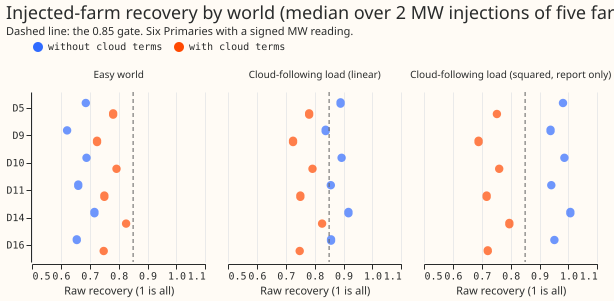
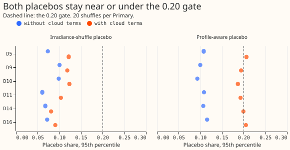
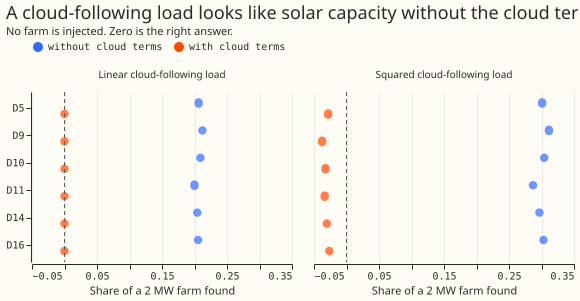
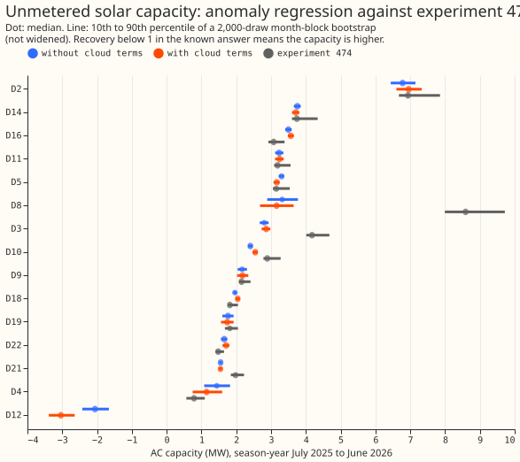

PV capacity: a new solar-capacity estimator compared with experiment 474's
Take-home message: an estimate of solar capacity built only from day-to-day weather within a month cannot be fooled by season, but it finds only 0.62 to 0.83 of a solar farm we added as a test, so it validates no Primary's capacity. The estimator (the anomaly regression) removes from the reading and from the physics solar shape the mean of the same calendar year-month, hour of day, and weekday class. A placebo is a deliberately wrong input that the estimate should not respond to, and this estimator passes the irradiance-shuffle placebo by construction. At the 6 Primaries whose reading is signed megawatts (signed-MW Primaries), it recovers 0.62 to 0.72 of the injected farm (0.73 to 0.83 with two cloud terms), against a gate of 0.85, and no Primary passes in any gated combination of world and estimator variant. Its capacities land within 5% of experiment 474's at 4 of the 6 signed-MW Primaries. The two methods use the same readings and the same physics solar shape, so this agreement is weak support. The estimator gives a negative capacity at D12 (reverse flow), and it differs from experiment 474 by 1.3 MW at D3 and 5.4 MW at D8.
The question was whether an estimate that the season and time of day cannot fake could validate the capacities that experiment 477's placebo gate rejected. The known-answer test shows that passing the placebo is not enough: the injected farm is recovered at about 0.67 without the cloud terms, so the mean removal erased about a third of the signal. One way to try next is a method that keeps more of the signal than a group-mean anomaly does, or that corrects for the recovery measured here.
Figures
Figure 1. Recovery of an injected farm by Primary, world, and estimator variant.

Figure 2. The 95th percentile of both placebos by Primary.

Figure 3. Capacity found when only a cloud-following load is added.

Figure 4. Capacity at each Primary against experiment 474's.

Results
- Arms. Two estimator variants: the anomaly regression without cloud terms and with the two cloud columns of experiment 474. Both fit temperature jointly (ERA5 temperature and its 24-hour mean, piecewise-linear at 5, 10, 15, and 20 degrees Celsius, three local-hour bands). Physics shape: tilt 35 degrees, DC to AC ratio 1.15, with the temperature derate. One capacity per season-year. 2,000-draw month-block bootstrap.
- Row set. Experiment 474's: default rows with a finite reading and CAMS shape before 2026-07-01; D18 from 2025-03-01 only; D15 not run (generator case). The injection test used Solar A, B, C, D, and F at D5, D9, D10, D11, D14, and D16, with the rows each farm has.
- Recovery (easy world: no load follows the clouds). The median over five farms is 0.62 to 0.72 per Primary without cloud terms (median 0.67) and 0.73 to 0.83 with them (median 0.77). The gate is 0.85, so no Primary passes. The 2 MW and 4 MW injections give identical recovery, because the fit is linear, so the 4 MW injection adds no information. Experiment 474's rungs recovered 0.75 to 0.94 without cloud terms. The cloud terms raise recovery in the easy world and lower it in both cloud-load worlds.
- Cloud-following load, linear form. Without cloud terms recovery rises to 0.84 to 0.92, because the load adds about 0.2 of spurious capacity (figure 3) on top of the shortfall. With cloud terms 0.73 to 0.83. The widened 80% interval covers the injected capacity in 0% to 60% of the injections (one injection is one farm at one size at one Primary) without cloud terms, and 0% with them. No cell passes the 70% coverage gate.
- Cloud-following load, squared form (report only). Without cloud terms recovery is 0.94 to 1.01 and the interval covers in 60% to 100% of injections. This coverage comes from the spurious load (0.29 to 0.31 of a 2 MW farm, figure 3) cancelling the shortfall, not from a sound estimate. With cloud terms recovery is 0.69 to 0.80 and coverage 0%.
- Cloud load alone, no farm. Without cloud terms the linear load invents 0.20 to 0.21 of a 2 MW farm and the squared load 0.29 to 0.31. With cloud terms the linear load invents 0.000006 (the terms match its form exactly, so this figure is optimistic) and the squared load -0.03.
- Profile-aware placebo (a), 95th percentile over 20 shuffles and 5 farms. 0.09 to 0.12 without cloud terms (passes at 6 of the 6 signed-MW Primaries). With cloud terms 0.187 to 0.206 (passes at 4 of the 6; D5 and D16 exceed 0.20). Experiment 474's rungs reached 0.25 to 0.51.
- Irradiance-shuffle placebo (b), share of the real capacity. 95th percentile 0.06 to 0.10 without cloud terms and 0.08 to 0.12 with them. This placebo passes by construction.
- Interval coverage. The bootstrap interval of an injected-minus-base increment is narrow because the reading's noise cancels between the two fits. A coverage failure therefore reflects bias (the recovery shortfall) and not an interval that is too narrow for the noise.
- Capacity at the 6 signed-MW Primaries, July 2025 to June 2026, with cloud terms (AC, MW, median; experiment 474 in brackets): D5 3.2 (3.1), D9 2.2 (2.2), D10 2.5 (2.9), D11 3.2 (3.2), D14 3.7 (3.7), D16 3.6 (3.1). The recovery of 0.73 to 0.83 suggests the true capacity is higher. No bias correction is applied. The full table, with DC capacity at an assumed DC-to-AC ratio of 1.25 (the AC capacity times 1.25; other ratios rescale it the same way), is in nged_table.md.
- 8 MVA-only Primaries. The estimates are fitted to apparent power with reactive power assumed zero, which experiment 366 found fails at a power factor of 0.97. D2 7.0 (6.9), D3 2.9 (4.2), D4 1.1 (0.8), D8 3.2 (8.6), D19 1.7 (1.8), D21 1.5 (2.0), D22 1.7 (1.5); D12 is -3.0 (reverse flow; the estimate is not a capacity). D18 (report-only, history from 2025-03-01) is 2.0 (1.8). None is validated.
- Signal share and detectability (stage 0). About 0.24 of the shape's variance survives the mean removal (0.21 at D18). At the 6 signed-MW Primaries the indicative minimum detectable capacity from the ordinary-least-squares error is 0.08 to 0.19 MW (0.09 to 0.22 MW with cloud terms), and 0.05 to 0.35 MW across all 14 Primaries without them. The bootstrap standard deviation of the capacity at the 6 signed-MW Primaries is 0.05 to 0.10 MW without cloud terms, which is 2 to 5 times the ordinary-least-squares error, so the stage 0 figure understates the noise by that factor. The bias in recovery is larger than either.
- Capacity-rises prior. Clipping at zero and taking the running maximum over season-years
changes the latest season-year's median by at most 0.011 MW at the 6 signed-MW Primaries. At D3
and D4 it changes by 0.03 to 0.06 MW, and at D12 it replaces the negative capacity with zero. At
D10 without cloud terms, season-year 2024 moves from 1.95 to 2.01 MW. Both versions are in
work/real_<site>.parquet. - Not applicable. No forecast is scored, so tail calibration, the avoidable-curtailment cost,
the equal-rows check, and the forecast-use step do not apply. The 5th and 95th percentiles of the
bootstrap capacity are in
work/capacity_table.parquet. The weather inputs are CAMS irradiance and ERA5 temperature, both estimates of past weather. Solar A to F are named by letter only, and no farm is paired with a Primary.
Deviations and caveats
- Failed predictions. Prediction 3 failed with cloud terms at D5 and D16 (placebo 0.205 and 0.206). Prediction 4 failed: easy-world recovery was 0.62 to 0.72. Prediction 5 failed: coverage with cloud terms was 0%.
- Optimistic cloud-load result. The cloud terms match experiment 129's linear load exactly, so the linear cloud-load result with cloud terms is optimistic.
- Unresolved MVA-only Primaries. D3 and D8 show the largest gaps from experiment 474 (1.3 MW and 5.4 MW). D4, D21, and D22 differ by 15% to 45%, and the two methods leave all five unresolved.
- Definitions. The group mean is the mean of the same calendar year-month in local time, the same local hour of day, and the same weekday class. A season-year gets its own capacity column with 4,000 half-hours in at least 3 months.
- Labels. NGED's event labels are incomplete, so the readings may hold unlabelled events.
- Compute. CPU only, 4 processes, about 3 minutes. Running the scripts needs
uv sync --all-packages --group gpu, because experiment 474's modules importtorch.
Pre-registered plan
- Estimator. For each Primary, remove from the reading (megawatts) and from every regressor the mean of the same calendar year-month, local hour of day, and weekday class (Monday to Friday, Saturday, Sunday). Regress the reading's anomaly on the physics PV shape's anomaly: tilt 35 degrees, DC to AC ratio 1.15 as in experiment 405, with the temperature derate, one capacity coefficient per season-year (July to June). The coefficient is the negative of the capacity in MW AC. Temperature enters the same regression, so heating and cooling load is fitted jointly with the PV capacity: ERA5 temperature and its 24-hour trailing mean, each with piecewise-linear hinges at 5, 10, 15, and 20 degrees Celsius, in three local-hour bands (0 to 8, 8 to 16, 16 to 24), all as anomalies. The comparison arm adds the two cloud columns of experiment 474 (the day-mean and half-hour cloud response).
- Capacity-rises prior. A post-hoc step after each fit: clip each draw's capacity path at zero and take its running maximum over the season-years, so a fall is resisted. Both versions are reported.
- Uncertainty. A month-block bootstrap of 2,000 draws, resampling months within each season-year and calendar quarter (experiment 269's stratification). The 10th, 50th, and 90th percentiles of AC capacity. DC capacity is AC capacity times 1.25, with 1.1 and 1.5 as a post-hoc rescaling (experiment 73 found the ratio not identified, and the AC capacity does not change).
- Known-answer worlds (experiment 474's harness, same farms and injection sizes). The injected series is subtracted from the reading (so the reading's anomaly falls by the series' anomaly) before the group means are removed. The easy world, with no load that follows the clouds, injects 2 MW and 4 MW of Solar A to F's output (five farms, E left out for its short history). The cloud-load world adds experiment 129's cloud-following load (a load whose mean equals 2 MW of capacity, linear in the day's mean cloud response). A third world adds a load that follows the squared day-mean cloud response, scaled to the same mean, to test a load the cloud terms do not match exactly. Each world runs with and without the cloud terms.
- Placebos. (a) The profile-aware placebo of experiment 474: the farm's day-of-year profile plus the anomaly of another day of the same month, injected at 2 MW. The group-mean removal deletes the profile, so this placebo can pass trivially. (b) The irradiance-shuffle placebo: the PV shape's days and the two cloud columns' days are permuted together, by one permutation within each calendar year-month, and the real reading is refitted, and the placebo capacity is reported as a share of the real capacity. This placebo is true by construction. Both use 20 shuffles. The page states plainly that a placebo that passes by construction can hide a real signal that was removed together with the means, so the known answer (recovery of the 2 MW and 4 MW injections) is the check that the means did not erase the signal.
- Coverage. The nominal 80% interval is the 10th to 90th percentile of the bootstrap's increment (injected-world capacity minus base capacity, same draw), reported alone and widened by 1.28 times the standard deviation of the point recoveries over the five farms (experiment 474's definition).
- Scope. Six signed-MW Primaries run the known answer. The eight MVA-only Primaries (D2, D3, D4, D8, D12, D19, D21, D22) are fitted to the apparent-power reading with reactive power assumed zero, by experiment 366's rule and experiment 420's export gate: the rule fails at a power factor of 0.97, so these capacities carry that caveat. D5 (export limit; the clip-free solar term does not represent it), D12 (reverse flow), D15 (generator case, not run), and D18 (history only from 2025-03-01, report-only) are marked. The 6 signed-MW Primaries and the 8 MVA-only Primaries are reported separately, never pooled.
- Not applicable. No forecast is scored, so the avoidable-curtailment cost, tail calibration (including the rule that q99 coverage must stay within 5%), and the forecast-use step do not apply. The tails reported are the 5th and 95th percentiles of the bootstrap capacity. Experiment 474's forecast-use step repeats experiments 405, 409, 416, and 477 and is dropped.
- Anonymisation. Solar A to F by letter; no nearest-farm names; distance bands only ("under 15 km", "15 to 30 km", "30 km or more"). Rows with no labelled event: NGED's event labels are incomplete, so the readings may hold unlabelled events.
Stage 0: numbers fixed before any recovery or placebo is read
Ordinary-least-squares standard errors on the real reading (no injection, no placebo), at the latest season-year (July 2025 to June 2026). The standard error assumes independent rows, so it is a lower bound (rows within a day are strongly correlated); the bootstrap interval will be wider.
- Post-removal signal share: 0.23 to 0.25 of the PV shape's variance at each of the 14 Primaries, and 0.21 at D18. Experiment 405 found 0.21 on its farm. About one quarter of the shape's variance survives the group-mean removal.
- Variance inflation factor of the latest season-year's capacity column against all other columns: 1.02 to 1.05 without the cloud terms, 1.35 to 1.65 with them, 2.4 for D18.
- Minimum detectable capacity (80% power, two-sided level 0.05 divided by the Bonferroni count of 36 tests: 6 signed-MW Primaries, 2 estimators, 3 gates): 0.05 to 0.35 MW AC without the cloud terms and 0.06 to 0.40 MW with them (D8 is widest, D21 narrowest). The count suits the 6 signed-MW Primaries only, and the figure tests a capacity against zero, which none of the gates does, so it is indicative. A capacity under those figures cannot be told from zero by this estimator.
- Bonferroni count: 36.
The full table is in the private file work/stage0_signal.json.
Checks and reviews
Plan review, code review before the first fit, results review, and write-up review: Sonnet
reviewers, as the ml-experiment skill requires. Their findings and triage are in the PR body.